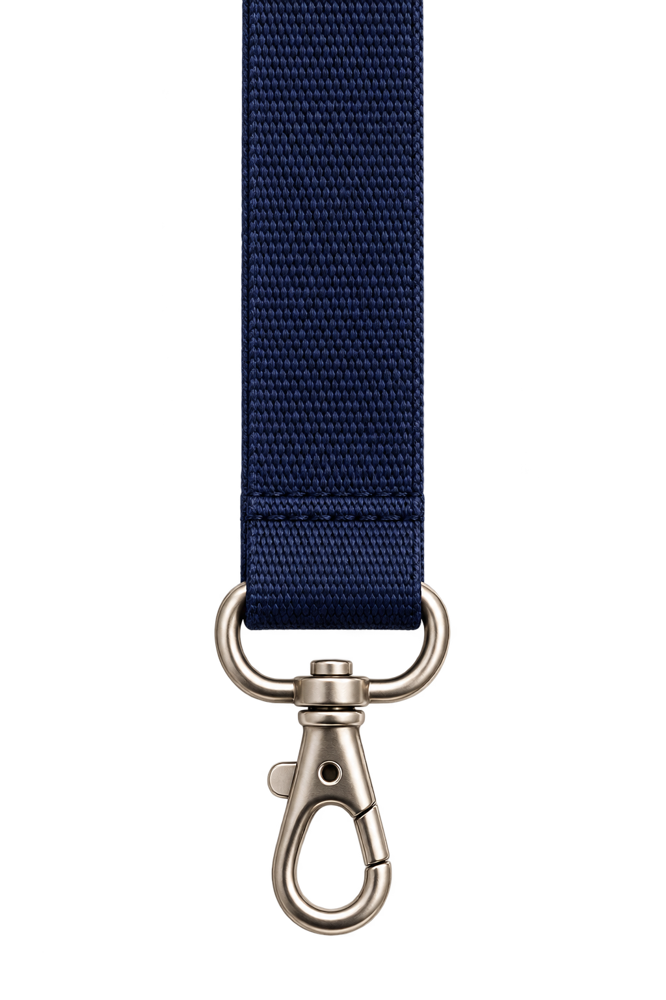
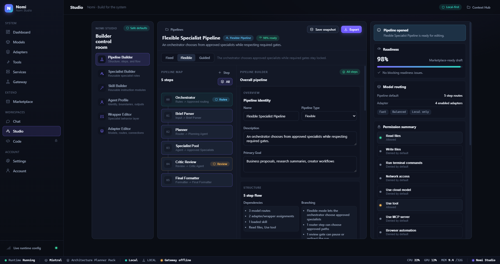
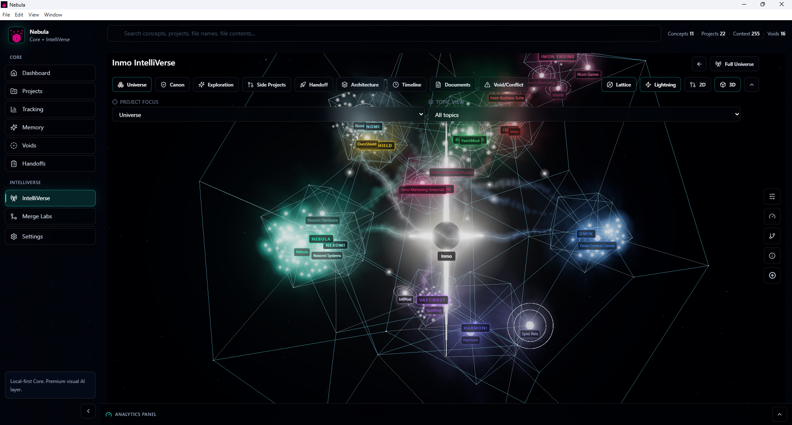
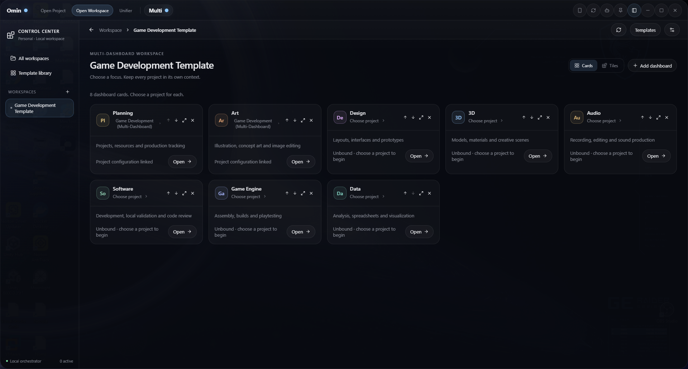
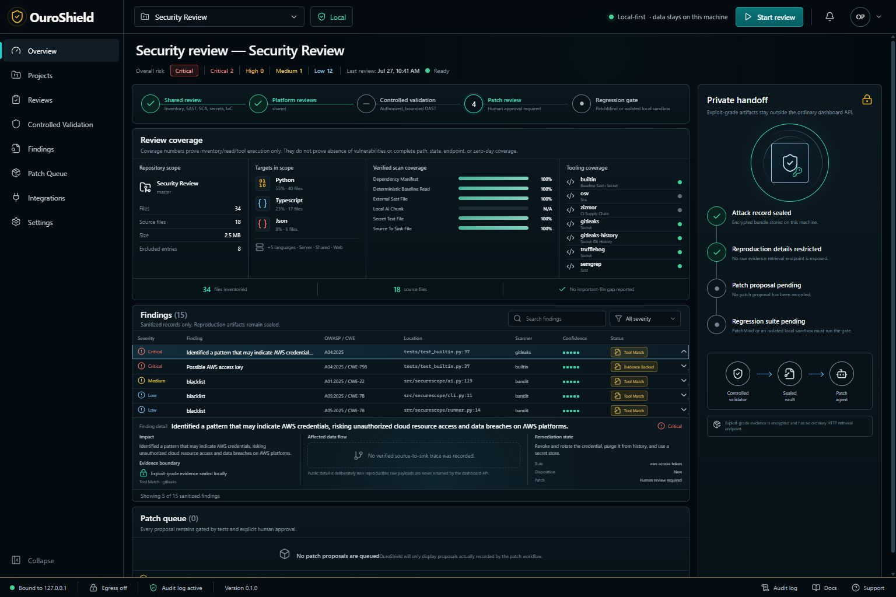
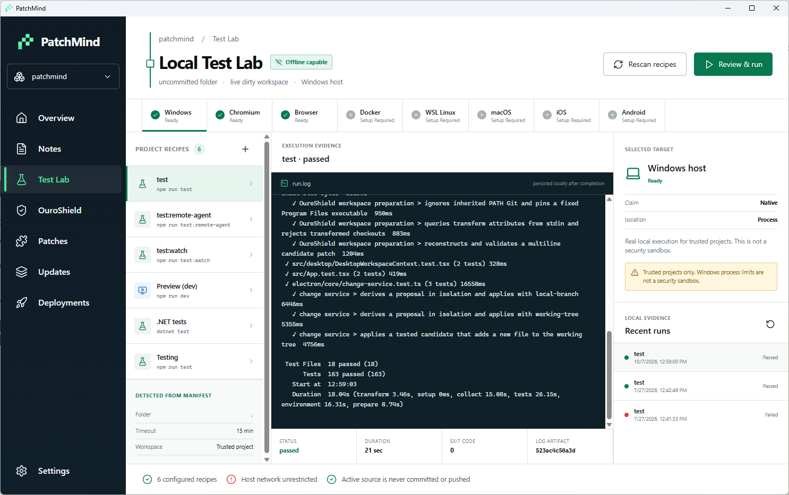
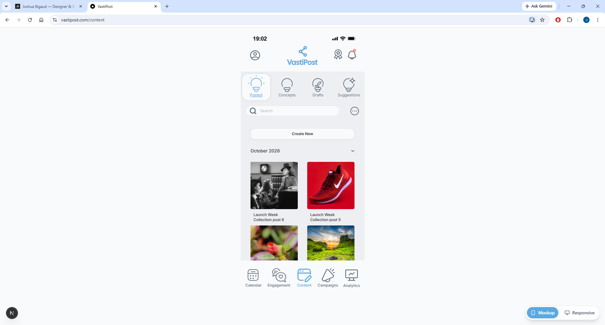
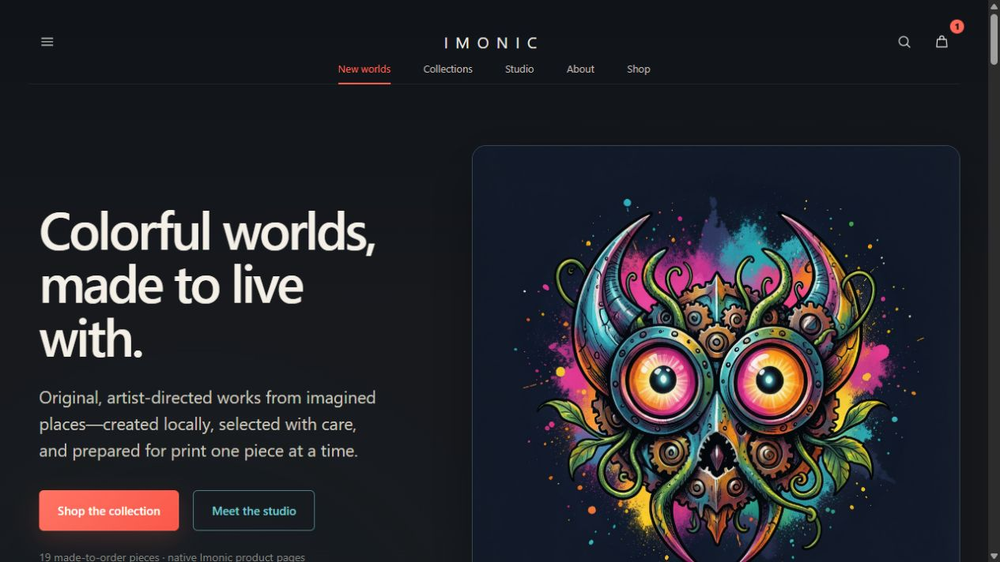

Thoughtful software.Built to be useful.
I’m an independent designer and developer turning complex ideas into clear, useful digital experiences.
01 — About
Hi, I’m Joshua.
I’m an independent designer and developer with certificates in UX design and AI & Python development. I learn by building: taking an idea, shaping the experience, and working through the details that make it useful.
Each project here is self-directed. I work across design and development, using AI tools as part of my process to explore, build, and iterate. Much of what I know is self-taught, and these projects are where I put that learning into practice.

Joshua Bigaud
Independent designer & developer
Independent projects
Discover what I do
02 — Stack
The tools behind my work.
Tools and technologies used across my independent projects and AI-assisted workflows. I learn through building, testing, and iteration, with AI tools as part of the process. Select a tile to see how it fits into the work.
03 — Selected work
Things I’ve built.
Independent projects.
From first concept to working software.
01Nomi
Desktop application
AI tools · Desktop experience
Nomi
A more personal workspace for AI.
In development · approaching V1
A local-first AI workspace that brings models, tools, and reusable pipelines into one desktop experience.
Read case study
Read the case study
The idea
AI workflows can involve several models, tools, and steps. Nomi brings those moving parts into a shared workspace, with dedicated areas for using AI, managing its capabilities, and authoring pipelines.
The design focus
The Studio interface makes a complex workflow readable. Its pipeline map shows the sequence of work, the center panel exposes the selected configuration, and the inspector keeps permissions and readiness close to the decisions they affect.
Structure you can follow
A persistent pipeline map gives each step a visible place in the workflow.
Controls in context
Editing and inspection sit alongside the flow, reducing the need to navigate away.
A consistent workspace
The shared navigation connects Studio with models, tools, and the rest of the application.
Where it stands
Nomi is approaching its first version. The portfolio focuses on the Studio pipeline-building experience while the wider product continues through development.
02Nebula
Desktop application
Project context · Spatial interface
Nebula
A universe of connected ideas.
In development
A visual workspace for exploring projects, ideas, and the context that connects them.
Read case study
Read the case study
The idea
Projects accumulate plans, decisions, and reference material. Nebula explores how to keep that context connected and easier to navigate as an idea grows into a working project.
The design focus
IntelliVerse uses a spatial map to make relationships visible. Project focus and topic controls provide familiar ways into the more exploratory star-chart interface.
A spatial point of view
Project galaxies and context stars give related information a shared visual space.
Exploration with orientation
Search and project focus sit above the map, keeping navigation grounded.
Context across a project
The product brings project understanding and handoff into the same workspace.
Where it stands
Nebula is in active development. The selected IntelliVerse view shows its spatial approach to project context and navigation.
03Omin
Desktop application
Workflow design · Multi-dashboard workspace
Omin
One place to orchestrate the work.
In development
A desktop workspace for organizing project work and assembling visual workflows.
Read case study
Read the case study
The idea
Moving between project context, development tools, and automated steps can fragment a workflow. Omin provides a shared place to organize those activities and inspect how a sequence fits together.
The design focus
The multi-dashboard workspace groups different areas of a project into a shared overview. Each card pairs a clear role with its project connection and an action to open that dashboard.
An overview of the work
Eight cards organize planning, creative work, development, and data in one workspace.
Project context per dashboard
Each card shows its linked project or a prompt to choose one.
A reusable starting point
The Game Development Template provides a structure that can be configured as projects take shape.
Where it stands
Omin is in development. The selected multi-dashboard workspace shows Planning and Art linked to a project, with the remaining cards awaiting project selection.
04OuroShield
Desktop application
Security tooling · Information design
OuroShield
Security, made clearer.
In development
A local security-review workspace that brings coverage, findings, and review stages into a readable interface.
Read case study
Read the case study
The idea
Security-review output needs structure to be useful. OuroShield organizes scanner results and review evidence so a person can understand what was checked and what still needs attention.
The design focus
The dashboard combines a review-stage rail, a coverage overview, and a structured findings table. Severity and evidence cues help organize dense information, while private handoff stays visually distinct.
A visible review journey
The stage rail connects review, validation, and patch review.
Evidence beside findings
Coverage and evidence context help explain the results on screen.
Deliberate information boundaries
Private handoff has a separate area from the main review queue.
Where it stands
OuroShield is in development. This page focuses on the review dashboard’s information hierarchy, coverage view, and presentation of findings.
05PatchMind
Desktop application
Developer tools · Test workflows
PatchMind
A clearer path from change to release.
In development
A desktop control plane for reviewing tests, coordinating patches, and preparing software updates.
Read case study
Read the case study
The idea
A proposed change and a tested change are different states. PatchMind gives testing, patch review, updates, and deployment their own places in the workflow.
The design focus
The Local Test Lab groups recipes on the left, execution evidence in the center, and target information on the right. A saved test run makes the connection between a command and its result visible.
Recipes within reach
Detected project commands live in a dedicated, scannable list.
Evidence at the center
The run log and outcome occupy the main work area.
A sequence of decisions
Testing, patches, updates, and deployments remain separate destinations.
Where it stands
PatchMind is in development. The Local Test Lab is implemented in the Windows desktop application; this capture shows an existing saved test run.
06VastiPost
Web application
Content planning · Mobile interface
VastiPost
A more organized creative workflow.
In development
A workspace for bringing content, campaigns, and social planning into a connected experience.
Read case study
Read the case study
The idea
Content work spans planning, assets, publishing, and follow-up. VastiPost organizes these activities into a consistent navigation system with a focus on a compact mobile experience.
The design focus
The Content library presents image posts in a compact, month-grouped grid. Posted, Concepts, Drafts, and Suggestions sit above search and creation controls, while persistent bottom navigation connects the wider workspace.
A visual content library
Image tiles and short captions make the content easy to scan.
A consistent navigation layer
Five primary destinations anchor the mobile experience.
Content stages within reach
Posted, Concepts, Drafts, and Suggestions share the same compact navigation row.
Where it stands
VastiPost is in development. The selected Content screen shows its mobile layout and Posted library view.
07Imonic Designs
Website
Web design · Creative direction
Imonic Designs
Colorful worlds, thoughtfully presented.
Live website · evolving project
An art-led website that gives a collection of colorful, imagined worlds a place to live.
Read case study
Read the case study
The idea
A creative storefront needs to let the work lead while giving visitors an understandable path through the collection. Imonic pairs expressive imagery with a restrained website structure.
The design focus
The homepage places the artwork alongside a direct introduction. A dark background lets the color carry the visual identity, while collection and studio links make the next step clear.
Artwork leads
A large featured work sets the tone immediately.
A quiet supporting system
Typography and navigation give the imagery room to stand out.
A path into the collection
The homepage connects the introduction with the artwork and studio.
Where it stands
The website is publicly viewable and continues to evolve. This portfolio focuses on its homepage design, visual identity, and introduction to the collection.
Real interfaces from independent projects. Each case study describes the work shown and its current stage.
04 — Learning
Always learning.
2 qualifications.
A foundation in design and development.
- 01
UX design
- 02
AI & Python development
05 — Contact
Let’s build something together.
Good things start with a conversation.